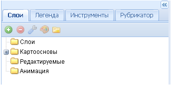
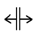

Боковая панель задач
Боковая панель задач служит для:
- управления отображением тематических картографических слоев, которые накладываются на картографическую основу;
- выбора необходимой картографической основы;
- редактирования и создания объектов;
- управления анимацией;
- вызова легенды;
- пользования инструментами при работе с пространственными данными.
Панель содержит три закладки – Слои, Легенда и Инструменты.

Приложение дает возможность менять размеры окна боковой панели. Его можно полностью свернуть, нажав на пиктограмму . Окно при этом примет вид сжатой панели в левой части экрана. Разворот в полный размер осуществляется нажатием пиктограммы .
Можно также произвольно менять ширину боковой панели, потянув влево или вправо линию границы (1) между боковой панелью задач и рабочим окном карты при нажатой левой кнопке мыши (при этом курсор поменяет вид на  ).